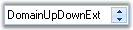

DomainUpDownExt is an advanced version of the standard windows DomainUpDown control. Syncfusion DomainUpDownExt supports themes and comes with Office2007 look and feel. It also provides options to apply custom colors to the control. It enables spin button orientation and alignment.

Figure 440: DomainUpDownExt with Office2007 Look and Feel
 Features
Features